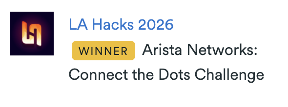

Veritas
Brief Overview
Veritas is a minimalistic Chrome extension that fact-checks YouTube videos in real time.
- Live caption streaming — The extension watches YouTube's closed captions and streams them to a FastAPI backend over WebSocket.
- Claim extraction — Gemma receives the transcript along with video metadata (title, channel, date, description) and extracts standalone, check-worthy factual claims.
- Retrieval-augmented fact-checking — Each claim is sent to a Fetch.ai uAgent that first checks a semantic vector cache (Gemini embeddings + cosine similarity), and on a miss gathers evidence from Wikipedia and Google Fact Check Tools, then asks Gemma for a verdict (true, false, misleading, or needs_context) with confidence, rationale, and citations.
- Overlay UI — A dark, modern, expandable panel on the YouTube page shows live verdicts as color-coded cards with clickable timestamps and source links.
- Ask Veritas — A built-in chat lets users ask free-form questions about the video using recent transcript context.

How it Works
- Chrome Extension (Manifest V3, vanilla JS) — A content script observes YouTube caption DOM mutations and streams finalized cues to the backend. A background service worker manages WebSocket connections. The overlay UI is injected directly into the page.
- FastAPI Backend — WebSocket endpoints ingest captions. A per-session orchestrator buffers transcript, extracts claims via Gemma, and dispatches them to the fact-check agent with rate-limit backoff.
- Fetch.ai uAgent — Registered on Agentverse with automated mailbox provisioning. Handles the full RAG pipeline: embed → cache lookup → evidence retrieval → LLM verdict → cache write-back. The backend communicates with it directly via RulesBasedResolver.
- Semantic Cache — SQLite with Gemini embeddings and cosine similarity (threshold 0.85), so paraphrased claims like "330 meters tall" and "stands at 330m" hit the same cache entry.
- LLM — Google Gemma 3 27B IT for claim extraction and verdict judgment. Prompts are tuned to use video metadata for pronoun resolution, cite sources by name, and always commit to a verdict.
Tech Stack
- Frontend — Chrome Extension (Manifest V3), vanilla JavaScript, custom CSS
- Backend — Python, FastAPI, Uvicorn, Pydantic
- AI/ML — Google Gemma 3 27B IT, Gemini Embeddings
- Agents — Fetch.ai uAgents SDK, Agentverse
- Evidence — Wikipedia REST API, Google Fact Check Tools API
- Data — SQLite (vector cache with cosine similarity)